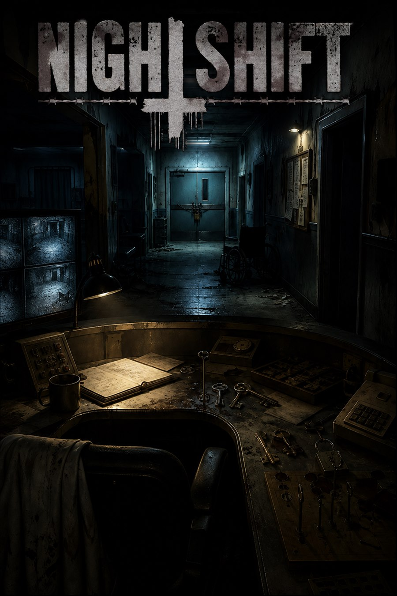

Sala destacada #4
Night Shift
Crupont Legacy
Nota global: 10.0/10
Night Shift de Crupont Legacy en Sabadell. Nota global 10.0/10 con 2 fuentes y 11 premios o nominaciones. Consulta datos, sinopsis, ubicación y fuentes...